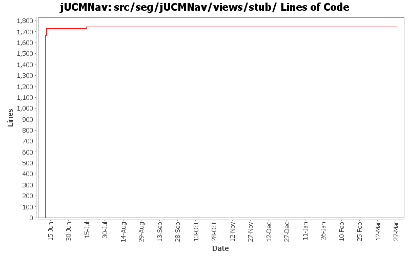

Summary Period: 2005-06-10 to 2006-03-27
[root]/src/seg/jUCMNav/views/stub

Total Lines Of Code:
1743 (2006-03-31 18:01)
| Author | Changes | Lines of Code | Lines per Change |
|---|---|---|---|
| Totals | 31 (100.0%) | 1743 (100.0%) | 56.2 |
| etremblay | 12 (38.7%) | 1728 (99.1%) | 144.0 |
| jkealey | 16 (51.6%) | 15 (0.9%) | 0.9 |
| jfroy | 3 (9.7%) | 0 (0.0%) | 0.0 |
bug 387: error on cancel after map creation
0 lines of code changed in:
bug 341: automatic update of pluginbinding properties
0 lines of code changed in:
Merge of GRL branch with the main trunk
0 lines of code changed in:
Extracted a bunch of strings, translated language files to French.
0 lines of code changed in:
Merge grl branch with the main trunk
Major modification of the metamodel (URN_08.mdl) (Added GRL metamodel, New interfaces that define common element in GRL and UCM, Modified UCM-Map package to implement the new interfaces (some associations and attributes have been refactored using the interfaces), Map is now called UCMmap (to resolve conflict with java.util.map in the implementation), Removed Path Graph)
Modification of the code that used the metamodel.
Started modification of jUCMNav to support GRL.
0 lines of code changed in:
bugs 372 - 378 - 380 - 379 - 273 - 375 - massive changes in deletion command infrastructure. mainly refactoring but also various functionality additions
also committing minor changes to the twiki plugin created by JFRoy and an ant script to generate javadoc on a windows machine.
0 lines of code changed in:
Lesson learned... Never try to make an SWT application in 3.1 for 3.0.... The layout won't work like you designed it in 3.1...
Added condition editing in the StubBindingDialog. Quick hack to take what was working in the 3.1 version done during the day and add it to the 3.0 version. The layout is not as nice though in 3.0.
0 lines of code changed in:
added headers + package.html for all files in the seg.jUCMNav.views.* package. did not clean the files
15 lines of code changed in:
Deleted useless Resp view actions.
Added a create map button in the Stub Dialog.
0 lines of code changed in:
bug 344 - localization wizard
0 lines of code changed in:
bug 359 - mode now affects all editors;
undiscovered regression bug - stub labels sometimes didn't move;
cleaned&commented (javadoc) seg.jUCMNav.editparts;
moved remaining stub code from PathNodeEditPart to StubEditPart;
moved remaiining condition code form LabelEditPart to ConditionEditPart
0 lines of code changed in:
Added a really basic Responsibility View. Right now you can select each responsibility but the selection synchronization is not there yet.
If you change info of responsibilities it'll show in the list, but if you add new ones it won't for the moment...
0 lines of code changed in:
bug 335: palette wording
bug 344: extracted more strings
0 lines of code changed in:
etienne: beware lowercase/uppercase differences in filenames!
0 lines of code changed in:
fixed null pointer bug in stub bindings view
0 lines of code changed in:
minor enhancement in binding dialog
0 lines of code changed in:
bug 295 - missing tooltip
0 lines of code changed in:
Delete of PluginBindings now works when deleting a stub with 1 or more number of in or out...
StubBindingsDialog now display IN and OUT from 1 instead of 0.
0 lines of code changed in:
Added some comments.
62 lines of code changed in:
New dialog when you double click on a dynamic stub to select the map you want to open.
1666 lines of code changed in:
Generated by StatCVS 0.2.4